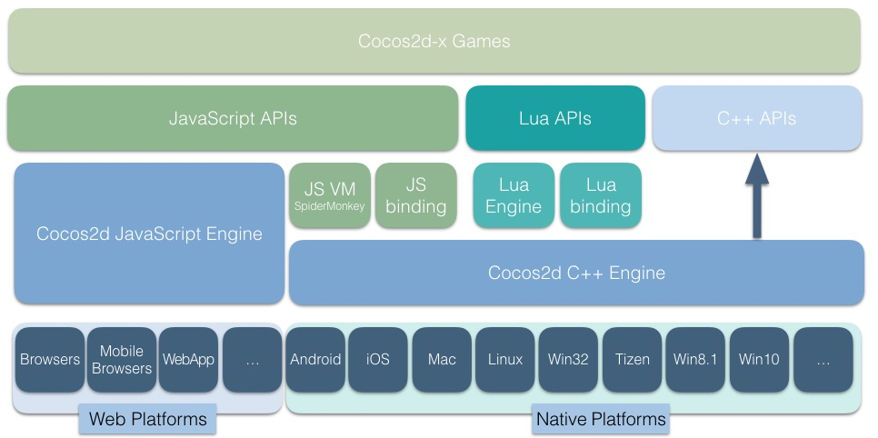

| iOS | Mac | Linux | Win32 | Android | Tizen | |
|---|---|---|---|---|---|---|
| v3 |
|
|
|
|
|
|
cocos2d-x is a multi-platform framework for building 2d games, interactive books, demos and other graphical applications. It is based on cocos2d-iphone, but instead of using Objective-C, it uses C++. It works on iOS, Android, Tizen, Windows Phone and Store Apps, OS X, Windows, Linux and Web platforms.
Cocos2d-x Framework Architecture:

cocos2d-x is:
Clone the repo from GitHub.
$ git clone https://github.com/cocos2d/cocos2d-x.gitAfter cloning the repo, please execute download-deps.py to download and install dependencies.
$ cd cocos2d-x
cocos2d-x $ python download-deps.pyAfter running download-deps.py.
cocos2d-x $ git submodule update --initsetup.pycocos scriptExample:
$ cd cocos2d-x
$ ./setup.py
$ source FILE_TO_SAVE_SYSTEM_VARIABLE
$ cocos new MyGame -p com.your_company.mygame -l cpp -d NEW_PROJECTS_DIR
$ cd NEW_PROJECTS_DIR/MyGameYou can also create a JS project or Lua project with -l js or -l lua.
$ cocos run -p android -j 4$ cocos run -p ios$ cocos run -p macThere are two ways to build and run Tizen project:
use cocos console(can not work on 32-bit Windows currently)
cocos run -p tizenuse Tizen IDE, can refer to this doc for detail usage
If you never run cocos2d-x on Linux, you need to install all dependencies by the script in cocos2d/build/install-deps-linux.sh
$ cd cocos2d-x/build
$ ./install-deps-linux.shThen
$ cd NEW_PROJECTS_DIR/MyGame
$ cocos run -p linuxRun
$ bin/MyGame$ cocos run -p win32$ cocos new MyGame -p com.your_company.mygame -l cpp -d projectsVisual Studio 2013 Update 4 or later is required for Windows 8.1 Universal Apps
Visual Studio 2015 (Release version) and Windows 10.0 (Release version) are required for Windows 10.0 Universal Windows Platform (UWP) Apps. RC versions of Visual Studio and Windows 10 are no longer supported.
Starting with Cocos2d-x v3.3, you can create Windows 8.1 Universal Apps (Windows Store and Windows Phone 8.1). Starting with Cocos2d-x v3.8 you can create Windows 10.0 UWP Apps (Windows Store and Windows Phone 10.0). Starting with Cocos2d-x v3.6 there will no longer be support for Windows Phone 8.0.
See more info on how to install and create games on Windows RT (Windows and Windows Phone 8.1) at http://msopentech.github.io/cocos2d-x/
Only JS project can be published to web platforms, so you will need to create a JS project first:
$ cocos new -l js WebGameThen you can run your game in a web browser:
$ cocos run -p webOr you can publish your game to publish/html5/ folder:
$ cocos run -p web -m release [--advanced]Select the test you want from Xcode Scheme chooser.
// Enter cpp test folder
cd tests/cpp-tests
// Or enter js test folder
cd tests/js-tests
// Or enter lua test folder
cd tests/lua-tests
// Compile or run test case
cocos compile -p ios|mac|android|win32|win8_1|metro|web -m debug|release
cocos run -p ios|mac|android|win32|win8_1|metro|web -m debug|release$ cd cocos2d-x/build
$ open cocos2d_tests.xcodeproj$ cd cocos2d-x/build
$ ./install-deps-linux.sh
$ cmake ..
$ makeRun Samples
$ bin/cpp-empty-test/cpp-empty-test
or
$ bin/lua-empty-test/lua-empty-test
You may meet building errors when building libGLFW.so. It is because libGL.so directs to an error target,
you should make it to direct to a correct one. `install-deps-linux.sh` only has to be run once.Open the cocos2d-x/build/cocos2d-win32.sln
Open the cocos2d-x/build/cocos2d-win8.1-universal.sln
Open the cocos2d-x/build/cocos2d-win10.sln
$ cd cocos2d-x/build
$ python ./android-build.py cpp-empty-test -p 13
$ adb install ../tests/cpp-empty-test/proj.android/bin/CppEmptyTest-debug.apkThen click item on Android device to run tests. Available value of -p is the API level, cocos2d-x supports from level 13.
Please refer to this guide.
You can help us spread the word about cocos2d-x! We would surely appreciate it!
You can see exactly what we are planning to do with the Cocos family of products.
cpp-tests project. This project is our basis for testing. Use this project to learn how we implement the functionality of the engine. This project is located in cocos2d-x_root/build.Cocos2d-x is licensed under the MIT License. We welcome participation!
Did you find a bug? Do you have feature request? Do you want to merge a feature?